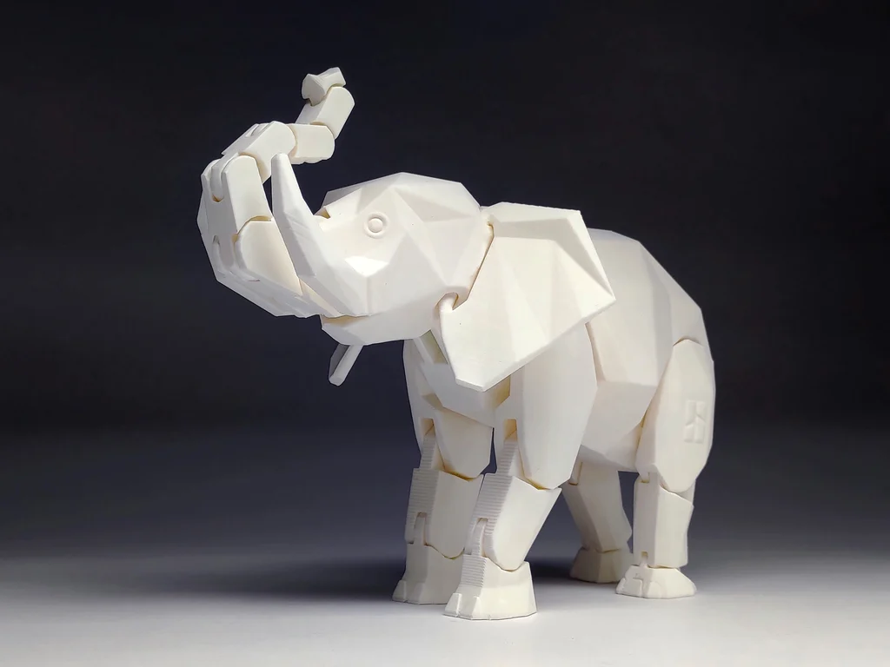
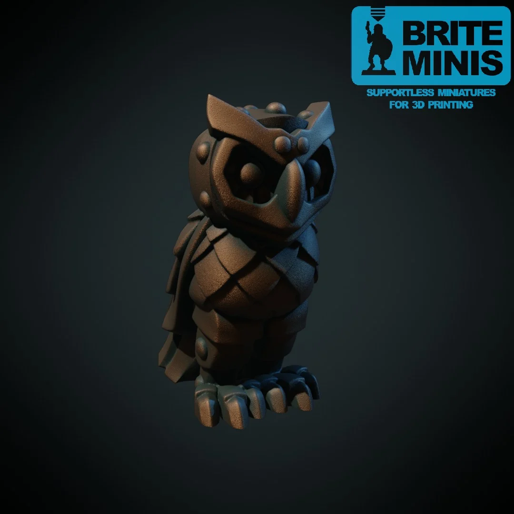

This is an African elephant with 22 movable joints. The joint design of this elephant is different from the common chain-like design. These joints can be adjusted and fixed at different angles, allowing the elephant's trunk to be lifted and posed in various preferred positions. The tightness of the joints depends on the hardness of the materials used for printing. Using harder materials will result in tighter joints. The reason it is named "Blank" is to encourage the printer to add color to the elephant's body. For those with multi-color 3D printers, they can try printing each segment in different colors. When printing, please start by printing the tail. If the tail can rotate properly, then use the same printing settings to print the other parts. If the tail gets stuck and cannot rotate, please reduce the material flow to continue printing.